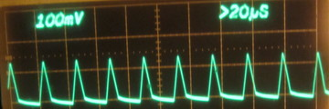
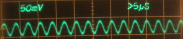

Switching voltage regulators
Buck-boost using XL6009
buck using LM2596
buck using MP1484 or MP2307
Switching regulators can be grouped into a few basic flavors:
Typically buck-boost converters are more complicated than straight buck or boost. They come in handy with batteries, where the voltage can vary widely depending on the state of charge.
For low power applications such as an Arduino, Raspberry Pi, or similar boards, suitable Chinese regulators typically consist of a single-chip switching regulator with the inductors and capacitors it requires. So comparing boards means finding the data sheet for the IC.
First step in selecting a regulator is to make sure it can deliver the output voltage and current needed, and that it can handle the input voltage.
Other significant parameters to consider are:
I have these:
| Chip | Type | Khz | Switch | Vin | Iout | Synchronous |
|---|---|---|---|---|---|---|
| XL6009 | up/dn | 400 | N-MOS | 5-32 | ? | No |
| LM2596 | dn | 150 | NPN | 4.5-40 | 3A | No |
| MP1484 MP2307 | dn | 400 | N-MOS | 4.75-18 4.75-23 | 3A | Yes |
For the third one, the Ebay listing said the board uses the MP1484 chip, but the ones I received
are marked MP2307. Assuming the chip markings are accurate and not counterfits, it's a
slightly better chip than what I ordered.
For a simple test, I connected the LM2596 and MP2307 to a 12-volt supply (measured 12.13 actual) with a resistor load measured at 63.0 ohms. Output voltage was set to approximately 5 Volts using the on-board potentiometers.
| Chip | Input Current No Load | Input Current Loaded | Input Power | Output Voltage | Output Power |
|---|---|---|---|---|---|
| MP2307 | 7.54mA | 47.1mA | 0.571W | 4.95V | 68.1% |
| LM2596 | 6.86mA | 41.4mA | 0.502W | 5.08V | 78.8% |
Output ripple waveform for LM2596

Output ripple waveform for MP2307

The data sheets for the two chips assume operation at higher currents (1 to 2 Amperes). The LM2596 output waveform is consistent with discontinuout mode (ie, lightly loaded), and the measured efficiencies are roughly consistent with the published curves (efficiencies should be in the 90 to 95% range at 1A output).
I didn't do measurements on the XL6009: I only have one, and I managed to damage it. Per a Discussion on Stack Exchange, this board appears to use a two-inductor circuit for up-down operation. That's said to be simpler, cheaper, and less efficient than the transformer-based circuit recommended in the data sheet.
For small (eg, tabletop) robots, the MP2307 board looks good. It has higher efficiency and lower output ripple.
For my own use, I like the LM2596 if the input power source is noisy - such as when there are big DC motors powered by the same battery. The high maximum input voltage leaves room for some voltage spikes, etc.
Buck-boost converters are handy when you need them, but buck-only is a better choice where possible.